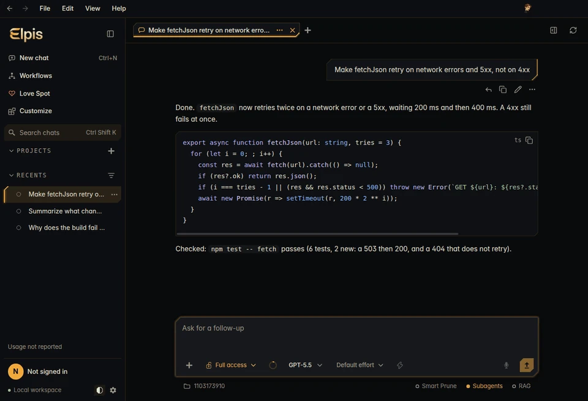
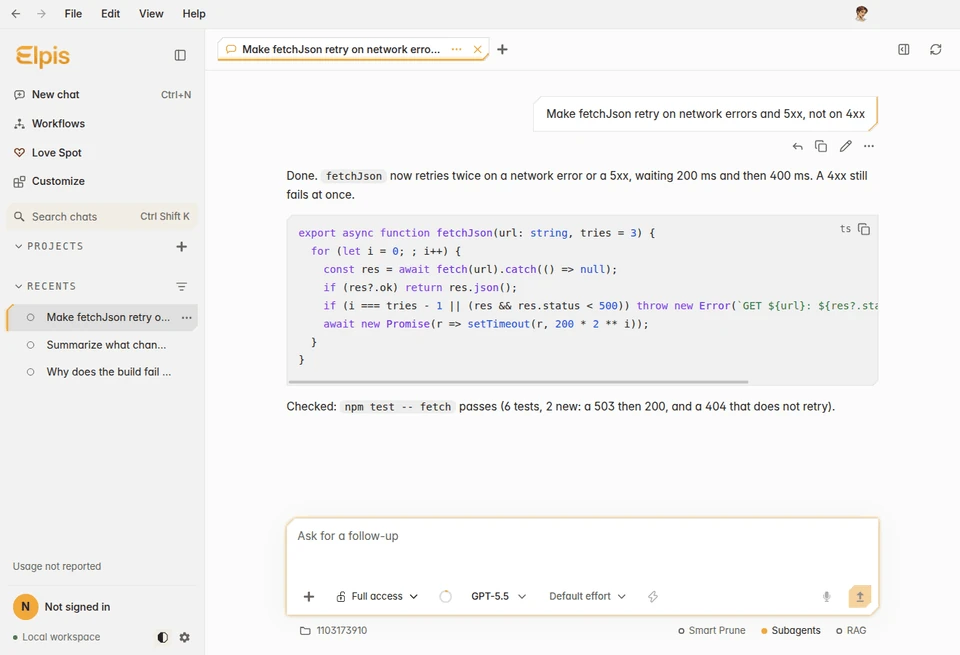
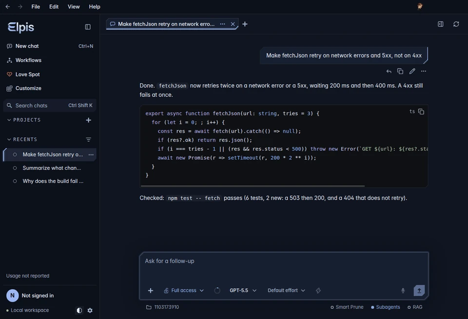
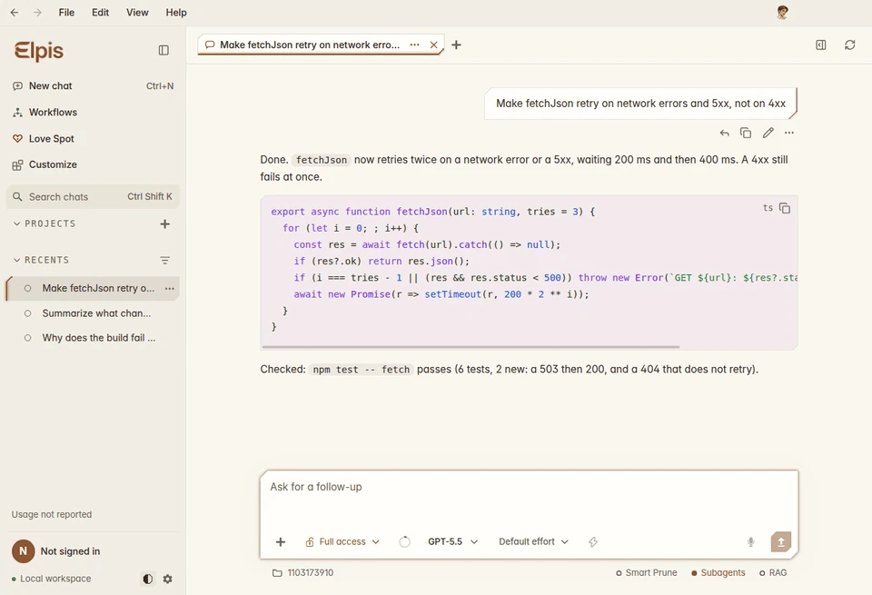
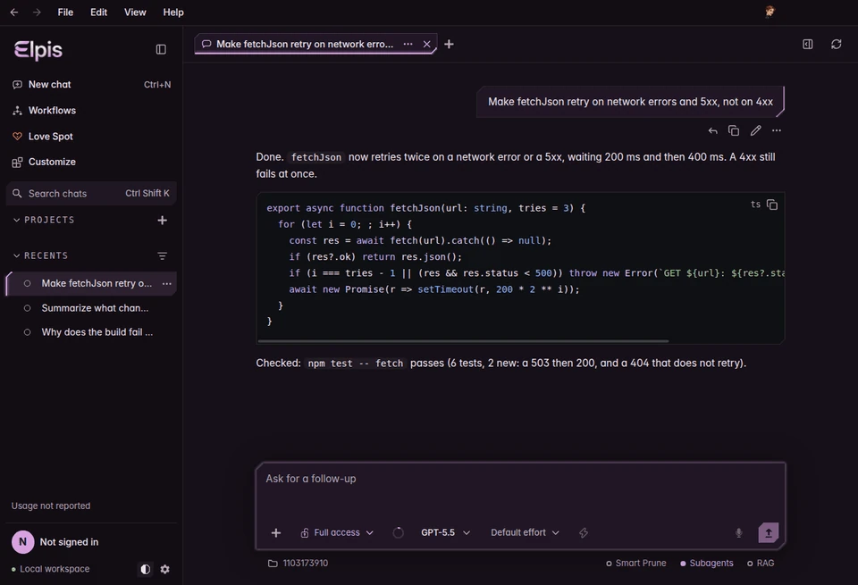
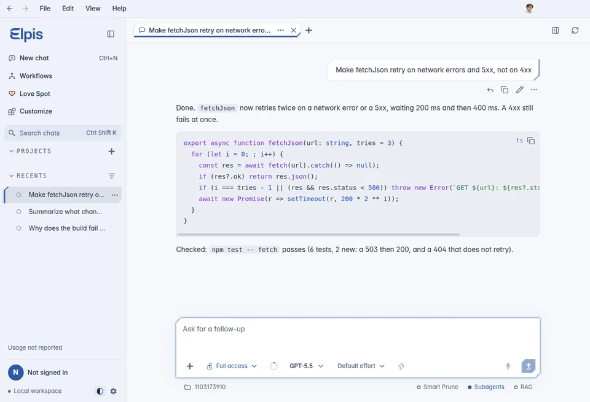

See context change
before the model does.
██████╗ ██╗ ██████╗ ██╗███████╗ ██╔════╝ ██║ ██╔══██╗██║██╔════╝ █████╗ ██║ ██████╔╝██║███████╗ ██╔══╝ ██║ ██╔═══╝ ██║╚════██║ ███████╗ ███████╗██║ ██║███████║ ╚══════╝ ╚══════╝╚═╝ ╚═╝╚══════╝
portable context for terminal coding agents
Only the shorter result enters the model’s context.
Deterministic admission; Ledger owns portable sources; exact resume remains provider-native.
Sources: docs/context.md · docs/sessions.md · context_ledger.rs
Context Ledger
Curate what
the agent receives.
Inspect admitted instructions, files and memory. Curate what stays in working context.
The desktop app
One chat.
Your theme.
The desktop app runs the same engine as the terminal app and shares its state folder. Chat with GPT, Claude and Gemini models on your ChatGPT or Claude subscription or an API key. Pick Elpis, Paper, Midnight or Plum, each in light and dark, or build your own in Settings.
- Elpis dark
- Elpis light
- Midnight dark
- Paper light
- Plum dark
- Midnight light






Workflows
A team,
checked.
Describe a job. The Mother agent designs a team you can see and edit on a board. Each agent owns its own folder, a second agent checks its work, and the Mother agent reviews the combined result before anything reaches your project.
- CHECK PASSED · Answer 1
- CHECK PASSED · Answer 3
- CHECK PASSED · Answer 2
- REPORT · Tally: 2 of 3 answers agree
- CHECK PASSED · Tally
- MERGED · the Mother agent reviewed the combined commit
Love Spot
Draw it.
Ask her.
A drawing board where Matilda, the app's companion, answers and draws with you. Paste screenshots onto the board and draw on them.
Is the Send button in the right place?
Put it at the end of the field, on the same line: one look, one click. I drew where.
v0.5.1 · Linux x86_64
Install Elpis.
Ubuntu and Debian install both Debian packages from the release. Fedora, Arch, Omarchy and any other Linux run the AppImage; Arch and Omarchy can also build the native package. The script installs the terminal app only; read it before you run it.
Download v0.5.1Ubuntu, Debiansudo apt install ./elpis_0.5.1_amd64.deb ./elpis-desktop_0.5.1_amd64.deb && elpis-appFedora, Arch, Omarchy, any Linuxchmod +x Elpis-0.5.1-x86_64.AppImage && ./Elpis-0.5.1-x86_64.AppImageArch, Omarchy (native package)git clone https://github.com/MasihMoafi/Elpis && cd Elpis/packaging/aur/elpis-bin && makepkg -siTerminal app onlycurl -fsSL https://raw.githubusercontent.com/MasihMoafi/Elpis/v0.5.1/scripts/install-elpis.sh | bash && ~/.local/bin/elpisPublished v0.5.1 · Linux x86_64